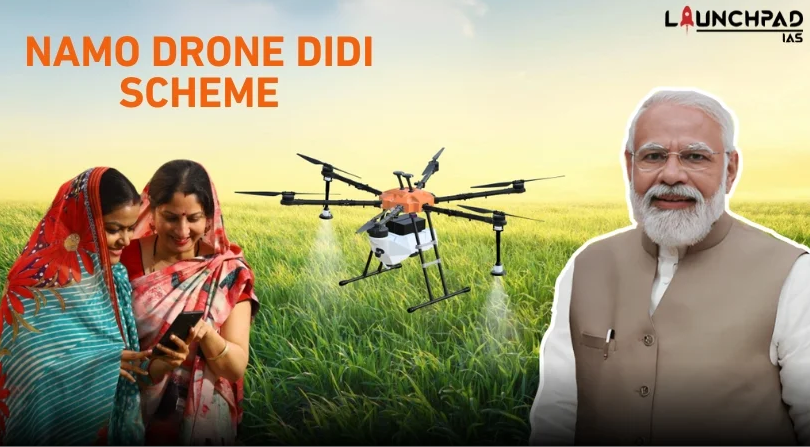

Lastly, we have the Namo Drone Didi scheme, an initiative launched by Prime Minister Narender Modi, that aims to empower women in Rural India. Under this scheme, the central government provides drones to the women involved in farming and helps them in agricultural activities like fertilizer spraying, seed sowing, and crop monitoring.
○ A subsidy of 80% of total drone cost up to INR 8 Lakh is offered to Women SHGs.
○ A loan from AIF at an affordable interest rate of 3%.
○ Training to operate the drones.
○ Women SHGs can earn Rs. 1 Lakh per year with the help of drones.
○ Active members of self-help groups are eligible.
○ Women from Self Help Groups (SHGs) in rural areas.